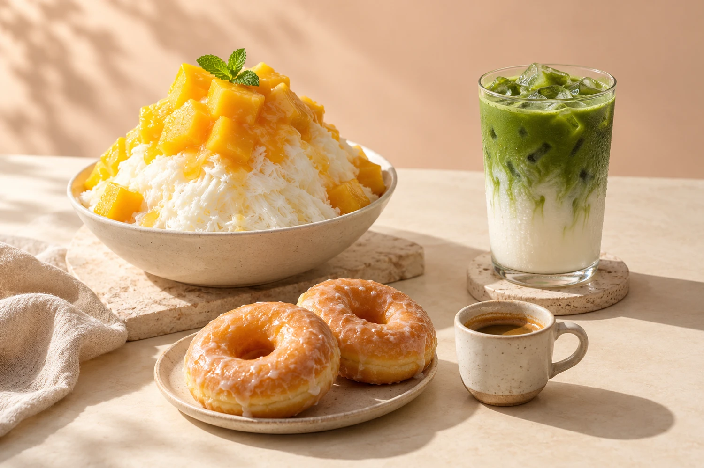

Coffee, your way.
A morning ritual or an afternoon reset. Ask about the current coffee selection.
CoffeeKorean dessert cafe · Cary, NC
Coffee in your cup. Something sweet on the table. A little time just for you.

Your next cafe moment
A Korean dessert cafe on Mills Park Drive, bringing together coffee, Soul Donuts™, bingsoo and savory bites.
Come for something familiar. Try something new. Leave a little room for dessert.
Make a little time for itA peek at the conversation
Public reviews often mention the donuts, bingsoo, creative drinks and cafe atmosphere. Experiences vary, with some customers noting waits, limited seating or differing views on value.
A summary of visible review themes, not a testimonial or an audit of every review.
Read the Google reviewsA little soul for your gathering
Planning a get-together? Email the cafe to ask about catering options, availability and pricing.
Ask about catering cafesoulcups@gmail.comFind your way to a little happy
Google Maps shows distance and travel time from your starting point.
Make a little time
A small heads-up: last orders and the kitchen close 30 minutes before closing.
Mon–Thu last order 8:30 PM
Fri–Sat last order 9:30 PM
Call to confirm holiday hours.
Follow @cafesoulcups on Instagram for the weekly menu and flavor updates. Call the cafe to confirm what is still available.
This is an independent redesign concept. It does not take orders, payments or reservations. Call the cafe for current ordering options.
Please ask the cafe directly about ingredients and preparation before ordering. This concept does not make allergen-free claims.
The cafe publishes cafesoulcups@gmail.com for catering inquiries. Email your event date, guest count and request to discuss availability.